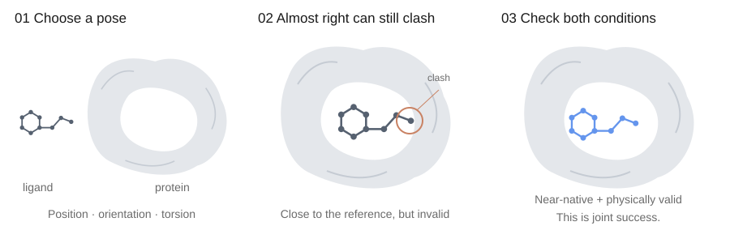
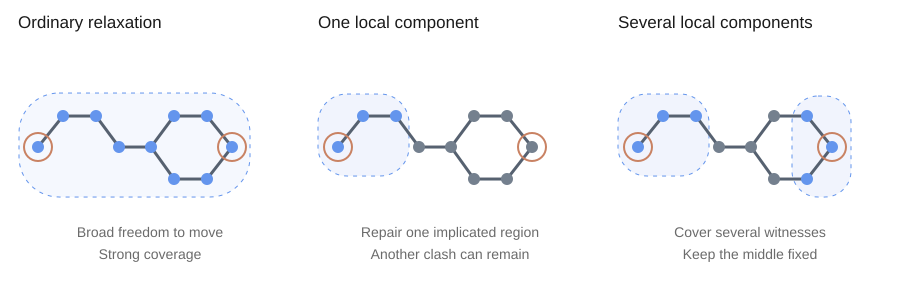
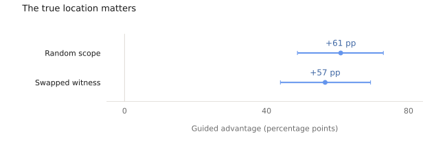
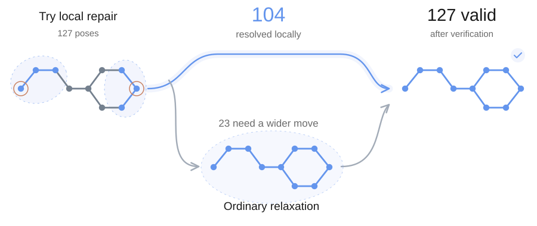
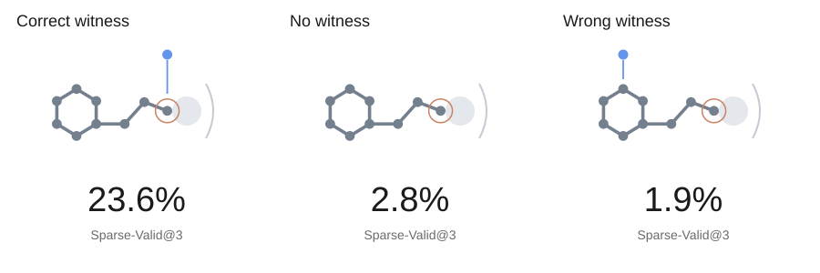

Verifiable Docking: Repairing Only What Needs to Move
A docking pose can be almost right and still clash with the protein. Can the clash itself tell us what to repair?

Introduction
A docking model can put a molecule in roughly the right place and still push one of its atoms into the protein. The usual fix is force-field relaxation: let the molecule settle into a lower-energy pose. That fix worked well enough to change the question behind this project.
Can a failed check tell us which parts of the molecule need to move? A clash comes with a clue: the atoms that are in the way. We want to use that clue to keep the useful parts of a pose while giving the troublesome regions enough freedom to move.
On a fresh PoseX holdout, multi-component repair matched ordinary relaxation’s observed top-5 joint success with less displacement. Minimization was 3.14× faster by the ratio of medians; recorded repair wall time improved by 1.08×. Choosing what moves helped, but most of the speedup disappeared outside the minimizer.
We’ll start with a quick picture of docking, then follow the experiments from local repair and matched controls to learned scope selection—and see how much of the speedup survives across the whole pipeline.
Docking, in one picture
A ligand is a molecule that binds to a larger molecule; here, it is a small molecule binding to a protein. Docking asks for its bound pose: position, orientation, and internal conformation. Those choices are coupled. Rotating a bond can clear one clash and create another.

Different methods get to that pose differently. The distinction matters here because our intervention happens after a pose has been predicted.
| Approach | Examples | Main idea |
|---|---|---|
| Search and score | AutoDock Vina [1]; GNINA [2] | Search candidate conformations; GNINA adds learned CNN scoring. |
| Learn the geometry | EquiBind [3]; TANKBind [4] | Predict binding geometry with equivariant or distance-based models. |
| Generate poses | DiffDock [5] | Use diffusion over translation, rotation, and torsion. |
Our repair experiments start from DiffDock predictions. We evaluate accuracy against a reference and physical plausibility with the full PoseBusters suite [6], whose checks use the RDKit cheminformatics toolkit [7].
| Predicted pose | Fails validity | Passes validity |
|---|---|---|
| Near-native | Repair opportunity | Joint success |
| Far from reference | Neither criterion met | Plausible, but inaccurate |
We count top-5 joint success when at least one of the top five poses is both near-native and valid.
A strong baseline
We began with the public PoseX benchmark [8]. Of 433 initially near-native but invalid poses, ordinary relaxation made 410 valid—about 95%.
A fresh DiffDock run told the same story: ordinary relaxation raised top-5 joint success from 41 to 77 of 200 cases. So we shifted the question toward preserving that utility while moving less of the molecule.
Choosing what moves
We call the clash a witness: a concrete example of where the pose violates a physical constraint. It points to a repair scope, the set of atoms allowed to move. Choose the scope, relax it, and check again.

First, we tried candidate scopes and selected the best result with hindsight—an oracle. Global relaxation in OpenMM supplied the baseline [9]. Very small scopes missed repairs. Expanding through neighboring constraints helped: a factor graph connects atoms to the constraints that couple their motion [10].
| Scope | Valid poses | What it tells us |
|---|---|---|
| Global relaxation | 94/106 | A strong reference |
| Strict-local oracle | 84/106 | Too little freedom |
| Oracle, smaller scopes first | 95/106 | About 27% of non-hydrogen atoms movable, at the median |
Many of these repairs could leave most of the ligand fixed. The next step was to choose a scope from the clash itself. The resulting procedure is short: try local repair, then fall back to ordinary relaxation when the check fails.
# Choose what moves, then check the result.
def repair(pose, protein):
witnesses = find_clashes(pose, protein)
scope = choose_components(pose, witnesses)
local = relax(pose, protein, movable=scope)
assert unchanged_outside(pose, local, scope)
if verifier_passes(local, protein):
candidate = local
else:
candidate = ordinary_relaxation(pose, protein)
return candidateThe local check decides whether to take the fallback; the full PoseBusters suite evaluates the final output. We reserve reference-pose accuracy for evaluation.
The control that moved
The first surprise came from the control. On 166 poses, guided and random repair both made 160 valid. Atoms outside the chosen scope could still move against a soft penalty, so even a random scope could clear the real clash.
Let x^0 be the starting coordinates and F the atoms outside the movable set, including the protein. A soft restraint adds a quadratic tether of strength \kappa to the system’s potential, E_0:
A finite penalty still lets an atom move if the rest of the energy decreases enough. Hard freezing instead constrains the optimization:
In OpenMM, zero-mass particles stay fixed during minimization. We use them to enforce the boundary; each selected non-hydrogen atom brings its attached hydrogens into the movable set.
Under soft restraints, even an excluded clash atom moved by roughly 0.36 Å in the random control. Under hard freezing, the maximum frozen-heavy-atom displacement was zero.

Once excluded atoms stayed fixed, the true clash location helped guide repair.
Covering several clashes
A ligand can clash in more than one place. With a single anchor, about half the poses in a reserved test set needed ordinary relaxation as a fallback, making the full procedure slower. We gave the next operator several anchors.
The multi-component operator groups connected clash atoms, chooses an anchor for each group, and unions their local neighborhoods. After finding a passing pose x^1, it can shorten the edit by moving back toward the input:
A short bisection search keeps a passing step closer to the input. We then tested this operator on 200 fresh PoseX pairs, including 127 poses in the repair cohort.

| Method | Top-5 joint ↑cases | Displacement ↓Å · median | Speedup ↑ | |
|---|---|---|---|---|
| Minimization | Recorded wall | |||
| Ordinary relaxationbaseline | 65/200 | 0.301 | 1.00× | 1.00× |
| Multi-component cascadelocal repair + fallback | 65/200 | 0.193 | 3.14× | 1.08× |
Bold marks observed improvements over the baseline. Displacement is RMS motion over ligand heavy atoms, then median across repair poses. Speedups are relative to ordinary relaxation and include fallback: a ratio of median minimization times, and a ratio of summed recorded wall times.
Most poses now took the local route. The cascade matched ordinary relaxation’s observed joint count while moving the ligand less. The operator met the targets set before the experiment, including comparisons with matched control scopes.
The full cost of repair
Minimization is only one item on the bill. Its reported speedup was 3.14×; recorded repair wall time improved by 1.08×. Both timings include the ordinary fallback. Detection and verification cost time too.
Amdahl’s argument [11] makes the next experiment clear: profile the whole repair. Faster local motion is useful; the next gain has to survive the surrounding work.
Learning the scope
Could a model learn which atoms to move? We trained a graph neural network, which passes information between atoms and the constraints connecting them. For each pose, it ranked a fixed menu of repair scopes, prepared independently of the clash information.
The development study covered 106 poses across 43 protein families. Each pose was evaluated by a model trained on other families.
The test was simple: try up to three proposed repairs, stopping at the first that passes the study’s 20 checks on molecular structure and physical plausibility. Count a success only if that accepted scope allowed at most 30% of the ligand’s non-hydrogen atoms to move.

Giving the model the real clash location raised this success rate from 2.8% to 23.6%. Both advantages over the controls had 95% confidence intervals above zero when we resampled whole protein families. The model had learned something useful about where to look.
Teaching that preference
The model predicts whether a repair will pass, how much the atoms will move, and how much work it will take. The training objective combines those predictions with a preference for useful candidate scopes:
The four terms learn pass/fail outcomes, order candidates, fit repair costs, and penalize probability errors. Rare passing repairs receive extra weight; cost scores are fitted on a logarithmic scale using passing candidates. Candidate ordering favors passes first, then smaller scopes, smaller edits, and less work.
After averaging predictions from five training runs, we keep candidates with pass probability \bar p_c\geq0.25. We sort by the fraction of non-hydrogen atoms allowed to move, a_c, then nonnegative motion and work scores, \widehat d_c,\widehat w_c. Probability and a fixed ID break the remaining ties:
The verifier makes the final acceptance decision. Table 3 tracks the remaining gap between learning where to look and choosing a small, successful repair reliably.
| Requirement | Observed |
|---|---|
| Keep movable regions small | 50.6% movable atoms at the median among accepted repairs; target ≤ 30% |
| Approach the best available scopes | 58.5% passing vs. 66.0% with hindsight; allowed gap: 5 percentage points |
| Preserve docking accuracy on new data | Not yet evaluated |
What still needs to travel
The next test is on unfamiliar binding pockets. DockGen tests novel binding domains [12]; PoseBench evaluates broader docking settings [13]. Our external studies also used Astex [14] and CASP15 ligand tasks [15].
| Question | Next step |
|---|---|
| Does repair transfer? | Keep the operator fixed; test on protein families absent from development. |
| Can the whole repair be faster? | Profile detection, selection, verification, and fallback with minimization. |
| Can the learned selector be useful? | Measure docking accuracy while reducing the number of movable atoms and the repair work. |
A clash is a useful place to start. It tells us where to give the molecule room to move. The next step is to make that repair cheap enough—and reliable enough on unfamiliar proteins—to earn a place in the docking pipeline.
Limitations
The multi-component result comes from one fresh PoseX holdout, with previously used pairs and ligand groups excluded. Transfer to new protein families remains unconfirmed. Broader external experiments encountered lower docking success, accepted poses that failed the final checks, too few test cases, or no clear advantage over control scopes.
The oracle and hard-freeze experiments serve different purposes. Table 1 uses hindsight on 106 previously examined poses selected by reference-pose accuracy; broader testing did not establish that sparse repair preserves ordinary relaxation’s performance. Hard freezing was a follow-up diagnostic after the soft-restraint test failed its planned control comparison, and its top-5 joint success remained below ordinary relaxation.
Physical validity assesses molecular geometry and plausibility, rather than establishing the true bound pose. The learned selector uses a separate 20-check protocol, distinct from the earlier full PoseBusters endpoint. Its development results missed the size and coverage targets in Table 3; reference-pose accuracy and a separate confirmation set remain unevaluated.
Recorded wall time covers the repair call and initial clash detection, excluding docking, preparation, and surrounding scope construction. The minimization speedup compares medians, while the wall-time speedup compares sums. These ratios alone cannot identify how much time each stage takes.
The optimization equations describe objectives. The control runs capped minimization at 100 iterations, and backtracking searches along one interpolation path. Neither procedure guarantees a global minimum or a globally smallest repair.
References
- Trott & Olson. AutoDock Vina: improving the speed and accuracy of docking with a new scoring function, efficient optimization, and multithreading. Journal of Computational Chemistry, 2010.
- McNutt et al. GNINA 1.0: molecular docking with deep learning. Journal of Cheminformatics, 2021.
- Stärk et al. EquiBind: Geometric Deep Learning for Drug Binding Structure Prediction. ICML, 2022.
- Lu et al. TANKBind: Trigonometry-Aware Neural NetworKs for Drug-Protein Binding Structure Prediction. NeurIPS, 2022.
- Corso et al. DiffDock: Diffusion Steps, Twists, and Turns for Molecular Docking. ICLR, 2023.
- Buttenschoen, Morris & Deane. PoseBusters: AI-based docking methods fail to generate physically valid poses or generalise to novel sequences. Chemical Science, 2024.
- RDKit contributors. RDKit: Open-source cheminformatics. Project documentation.
- Jiang et al. PoseX: AI Defeats Physics Approaches on Protein-Ligand Cross Docking. arXiv, 2025; revised 2026.
- Eastman et al. OpenMM 8: Molecular Dynamics Simulation with Machine Learning Potentials. Journal of Physical Chemistry B, 2024. Simulation toolkit background.
- Kschischang, Frey & Loeliger. Factor graphs and the sum-product algorithm. IEEE Transactions on Information Theory, 2001. Background on factor-graph representations.
- Amdahl. Validity of the single processor approach to achieving large scale computing capabilities. AFIPS Spring Joint Computer Conference, 1967.
- Corso et al. Deep Confident Steps to New Pockets: Strategies for Docking Generalization. ICLR, 2024.
- Morehead et al. Assessing the potential of deep learning for protein-ligand docking. PoseBench; arXiv, 2024, revised 2026.
- Hartshorn et al. Diverse, high-quality test set for the validation of protein-ligand docking performance. Journal of Medicinal Chemistry, 2007.
- Robin et al. Assessment of protein-ligand complexes in CASP15. Proteins, 2023.
Citation
@misc{yoshihara2026verifiabledocking,
title={Verifiable Docking: Repairing Only What Needs to Move},
author={Kirato Yoshihara},
year={2026},
url={https://kiratoyoshihara.github.io/essays/verifiable-docking.html}
}